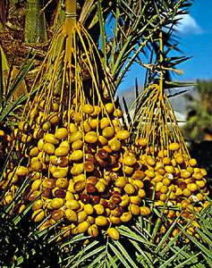

There are moments in the history of all sciences when remarkable progress is made in relatively short periods of time. Such leaps in knowledge result in great part from two factors: one is the presence of a creative mind—a mind sufficiently perceptive and original to discard hitherto accepted ideas and formulate new hypotheses; the second is the technological ability to test the hypotheses by appropriate experiments. The most original and inquiring mind is severely limited without the proper tools to conduct an investigation; conversely, the most-sophisticated technological equipment cannot of itself yield insights into any scientific process.
Although it is not known when the study of biology originated, early humans must have had some knowledge of the animals and plants around them. Human survival depended upon the accurate recognition of nonpoisonous food plants and upon an understanding of the habits of dangerous predators. Archaeological records indicate that even before the development of civilization, humans had domesticated virtually all the amenable animals available to them and had developed an agricultural system sufficiently stable and efficient to satisfy the needs of large numbers of people living together in communities. It is clear, therefore, that much of the history of biology predates the time at which humankind began to write and to keep records.
Much of the earliest recorded history of biology is derived from Assyrian and Babylonian bas-reliefs showing cultivated plants and from carvings depicting veterinary medicine. Illustrations on certain seals reveal that the Babylonians had learned that the date palm reproduces sexually and that pollen could be taken from the male plant and used to fertilize female plants. Although a precise dating of those early records is lacking, a Babylonian business contract of the Hammurabi period (c. 1800 BCE) mentions the male flower of the date palm as an article of commerce, and descriptions of date harvesting extend back to about 3500 BCE.
With Aristotle and Theophrastus, the great Greek period of scientific investigation came to an end. The most famous of the new centres of learning were the library and museum in Alexandria. From 300 BCE until around the time of Christ, all significant biological advances were made by physicians at Alexandria. One of the most outstanding of those individuals was Herophilus, who dissected human bodies and compared their structures with those of other large mammals. He recognized the brain, which he described in detail, as the centre of the nervous system and the seat of intelligence. On the basis of his knowledge, he wrote a general anatomical treatise, a special one on the eyes, and a handbook for midwives.